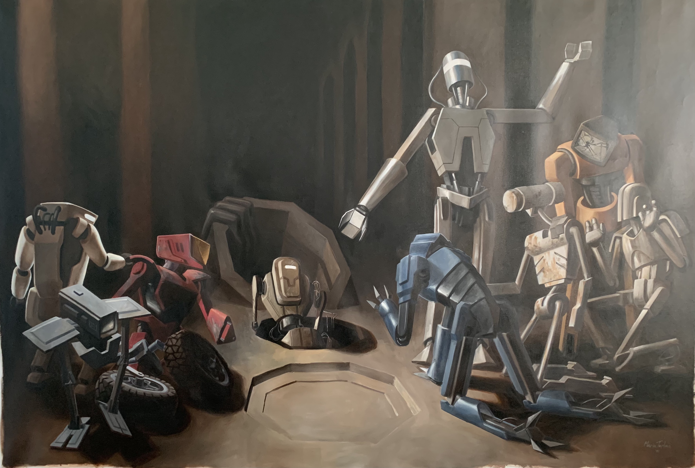

Resurrection
By Maria Teplova ('21)
While ideating for my Honors Directed Portfolio final project, I was studying Baroque art in my art history class. My artistic training has always been built around classical methods and I, like many, have a long held admiration for the technical abilities of late Renaissance artists. The drama, theatricality, and intensity of Caravaggio’s work spoke to me especially. I also looked at works by Rubens for more insight on composition and how to create a tangled yet understandable mess of figures. Though I’ve studied perspective and anatomy and tried out the Old Masters technique, I’ve never attempted to create a work that fully embodied Renaissance ideals. After all this time spent practicing, I realized that this project could be the perfect opportunity to test the limits of my technical ability and to fully immerse myself in the methods of artists from hundreds of years ago -- all while putting my own twist on it.
Making this piece truly self-indulgent, I depicted humanoid robots rather than humans. While the figures in Baroque works revolve around Biblical narratives central to the culture of the time period, these robots reflect my personal adoration for science fiction. I wanted to illustrate silly-looking robots using a serious and intense art style that was a tool for the Counter-Reformation, turning a story meant to be a spiritual experience into something comical and non-human. This painting is my love letter to classical art and a reflection on the fictional worlds central to my childhood. I consider it to be the final act of my high school art career, the perfect sendoff before I immerse myself into the world of contemporary art.
Making this piece truly self-indulgent, I depicted humanoid robots rather than humans. While the figures in Baroque works revolve around Biblical narratives central to the culture of the time period, these robots reflect my personal adoration for science fiction. I wanted to illustrate silly-looking robots using a serious and intense art style that was a tool for the Counter-Reformation, turning a story meant to be a spiritual experience into something comical and non-human. This painting is my love letter to classical art and a reflection on the fictional worlds central to my childhood. I consider it to be the final act of my high school art career, the perfect sendoff before I immerse myself into the world of contemporary art.
